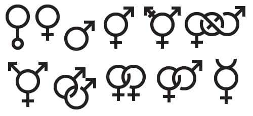
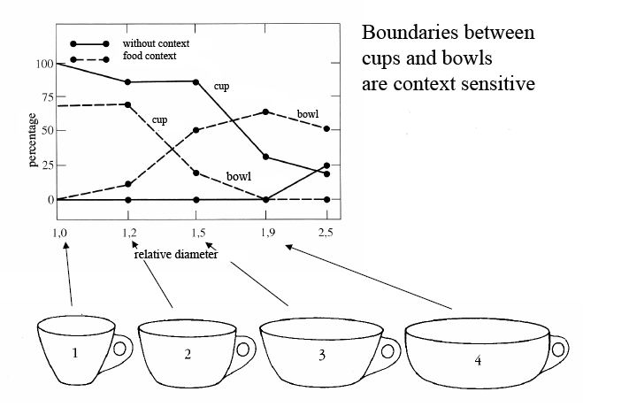
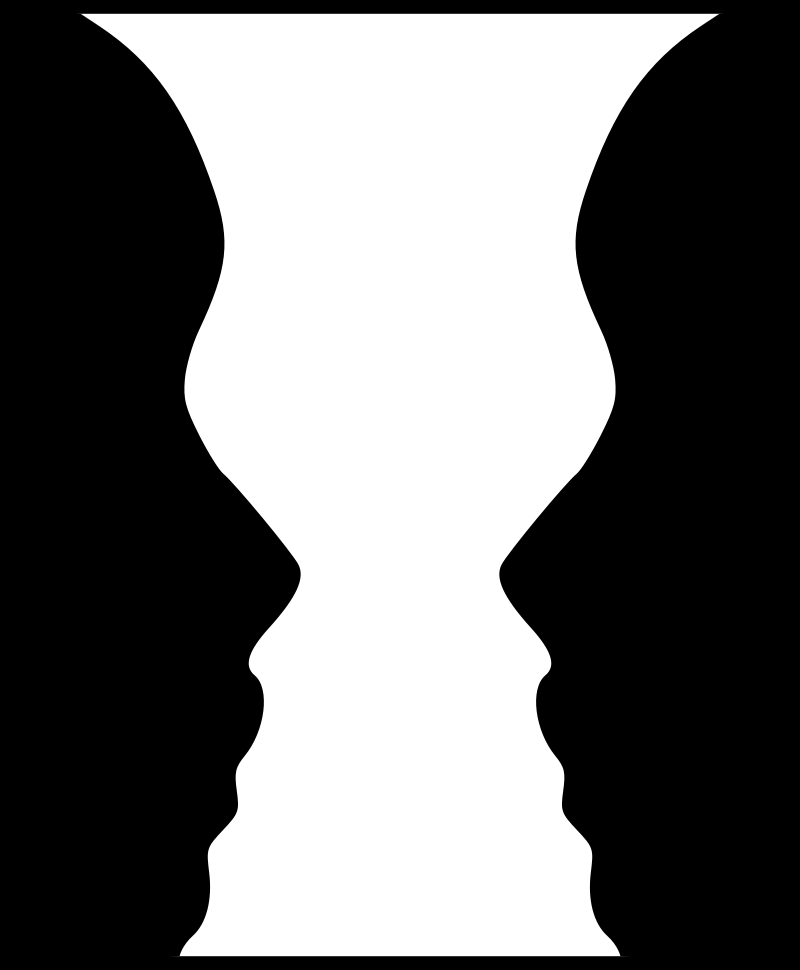
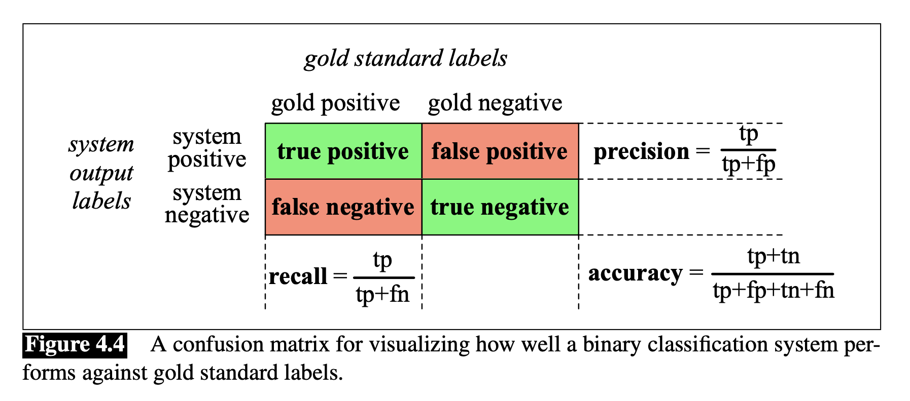

Week 8: Cognitive Linguistics and NLP
背景
意義是一切！
上週提到的形式語言學（形式語法與邏輯語意）在程式語言的編譯上具有很大的用途。
語意學很長一段時間將重點放在具有真值 (truth value) 判斷的陳述句，同時開展了相當完整的邏輯與推導系統。
但是，語言的使用者不只是要表達真實的意義，也要表達自己的情緒、態度、立場、意圖、想法、慾望等交際意義。
語言學到現在累積的幾個經驗
(Hsieh 2023)
化約論 (reductionism) (複雜的問題可以通過分析其組成部分來解決) 在探究語言的意義上有很大的局限性。
模塊觀 (modularist view) 是 useful fiction。例如把語意與語用分開處理，是教學方便。
語法自主 (autonomy of syntax) 與內在天賦論 (innateness) 是可疑的。 \(\rightarrow\) 語言學習是意義與交互作用中驅動的。句法與語意不可分，是在使用中湧現的產物。
語言不僅是單一的物理現象、生理現象、社會現象，心理現象。它是人文化成的複雜系統。
認知與語言
那麼，在語言學中有什麼其他的想法或假設嗎？
語言學的認知假設
認知語言學 (cognitive linguistics) ，或語言與認知
- 在腦神經科學與認知科學的基礎下，80-90 年代，一些語言學家開始關注語言與人類認知之間的相互作用。
核心觀點是語言不僅是一種抽象的符號系統，而且是與我們的思維、知識和經驗密切相關的複雜心智現象。
主要研究範疇
概念隱喻（Conceptual Metaphor）、構式語法（Construction Grammar）、語言類型學（Linguistic Typology）與文化、語言習得和使用、語言與時間空間、語言與概念組織等
核心觀點
象似性 (iconicity)：語言的符號與其對應的客觀對象之間的相似性。the degree to which a linguistic expression resembles the object or event it denotes (Peirce).
皮爾斯提出了三種不同類型的符號 (sign)：
標誌符號 (icon) : 符號與客觀對象有形象上的關係。
指示符號（index）: 符號與客觀對象有直接的或因果的關係。
象徵符號（symbol）: 符號與客觀對象有約定俗成的關係。 
象似性在中文文字造字上的表現
象形 (iconic)、指示 (indexical)、…?
象似性在漢語上的表現
語言中的象似性主要是指「語言結構」跟人的「概念結構」之間的自然聯繫 (戴浩一, 1985)。展現在順序、距離、重疊等方面。
- 順序象似性
她搭捷運到這裏 vs 她到這裏搭捷運
象似性在漢語上的表現
- 距離象似性 (概念上距離近的成分設法在句法分佈上彼此鄰近)
吃飽了vs *吃了飽 vs 吃個飽
他送給她一張卡片vs 他送一張卡片給他
象似性在漢語上的表現
- 重疊象似性
主觀性、場景與注意力/焦點
Subjectivity 心理活動的選擇性
Focus 心理活動所選擇的客觀物件
範疇化 (categorization)
- 概念的原型和屬性

- 階層
主體與背景 | Figure and Ground

- 語言順序如何反應主體與背景的認知關係？
意象圖示 | Image Schemas
意象: 在某物不在場時，我們的心智還能想像得出該物的具體。
圖示：把經驗加工組織成某種認知結構，較長期地儲存在記憶之中。
意象圖示：在人與客觀世界感知與互動中一種反覆出現的動態的模式。 e.g,
SOURCE-PATH-GOALschema
完形與語言壓縮
隱喻與轉喻 | metaphor and metonymy
隱喻 (基於相似)
隱喻在修辭上，由本體 (tenor)、喻體 (vehicle)、喻基 (ground) 三個部分組成。
認知隱喻：source - target
轉喻 (基於鄰近)
構式語法 | Construction Grammar
(Goldberg)
構式是指形意配對的模式，是語言的一種基本結構。
較穩定的如
- 中動構式
NP-起來-AP(AD+Adj) - 把字句構式
- …
- 中動構式
構式知識語料庫
構式與機器學習
Computational Construction Grammar (C*G)
總結
- 人的認知結構（象似性、思維時序關係、空間層次關係等）參與決定了語言的意義結構。
LLM/FM 的成效與認知語言學的關係
藏在語言使用中（注意 instruction, feedback 也在其中）。
但認知涉及感官與身體經驗，多模態資料的整合在 usage-based learning 中可以達到什麼樣的成效，可以拭目以待。
- 以 affordance 為例
機器學習和 NLP 已經無法分開
下週開始進入（以深度學習爲主的）語意表徵的世界。
雖然時代的演進可能會讓機器學習變成 no-code/low-code 的常民工具，但是我們至少要了解它的基本原理。
推薦李宏毅老師的機器學習課程 (2021-2022)
- 理論與應用學習法Getting Started with Machine Learning in One Hour!：自己選擇學習路徑！
Evaluation metrics
爲何需要這些不同的評估方法？ 
\(F_{\beta}= \frac{(\beta^{2} +1) PR} {\beta^{2}P+R}\)